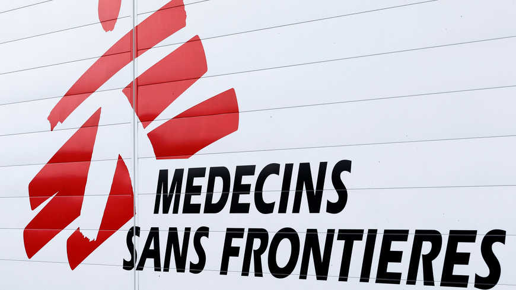

Quem somos

Médicos Sem Fronteiras (MSF) é uma organização humanitária internacional que leva cuidados de saúde a pessoas afetadas por graves crises humanitárias. Também é missão da MSF chamar a atenção para as dificuldades enfrentadas pelos pacientes atendidos em seus projetos.
Atualidades
Acesse essa notícia
Notícia do Projeto 30/04/2020
COVID-19: mais de 200 mil pessoas vulneráveis em Kibera, no Quênia
Acesse essa notícia
Notícia do Projeto 30/04/2020
5 doenças que podem ser evitadas por meio de vacinação
Notícia do Projeto 30/04/2020
5 doenças que podem ser evitadas por meio de vacinação
Emergência Mundial
Saiba sobre o coronavírus, MSF responde a pandemia e ajude-nos